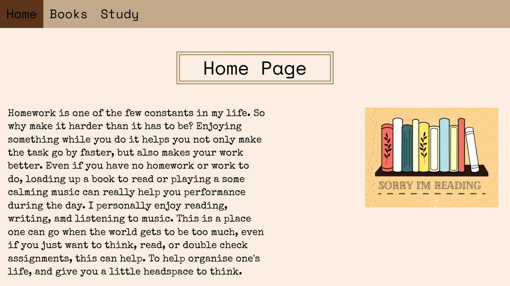
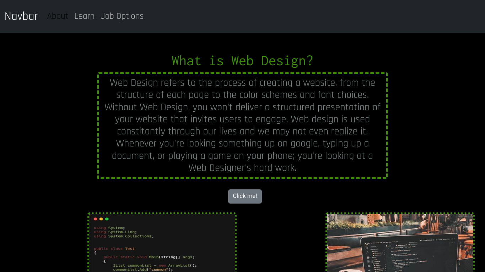
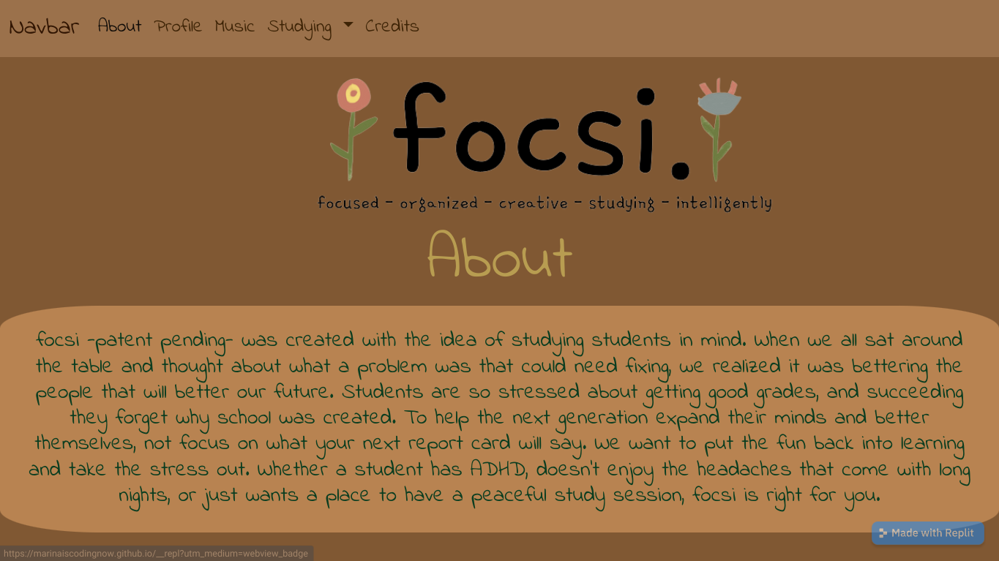
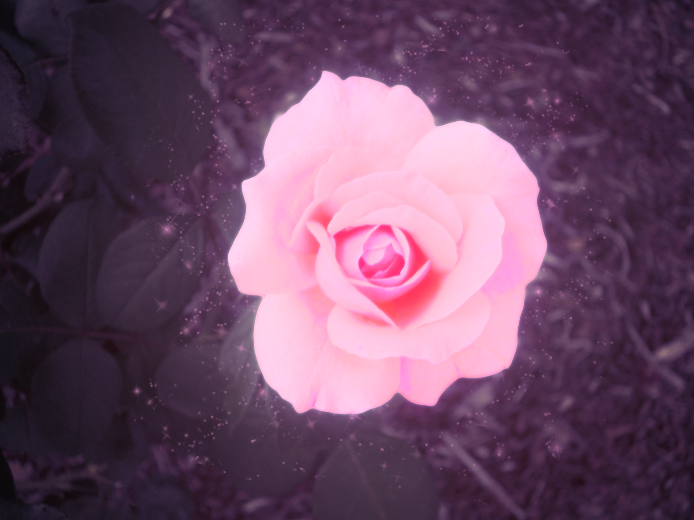
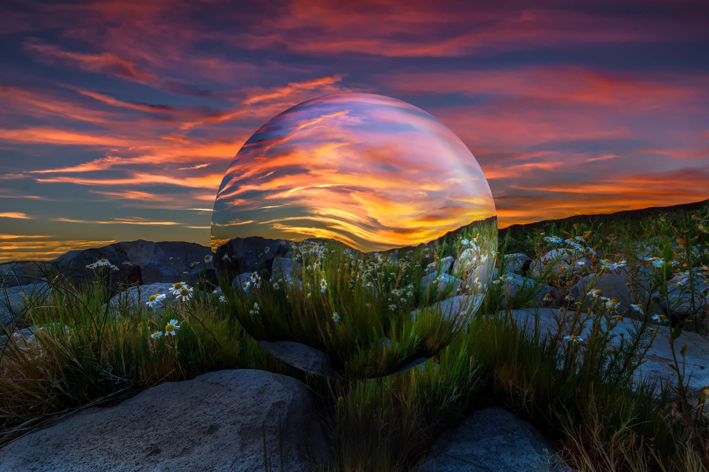
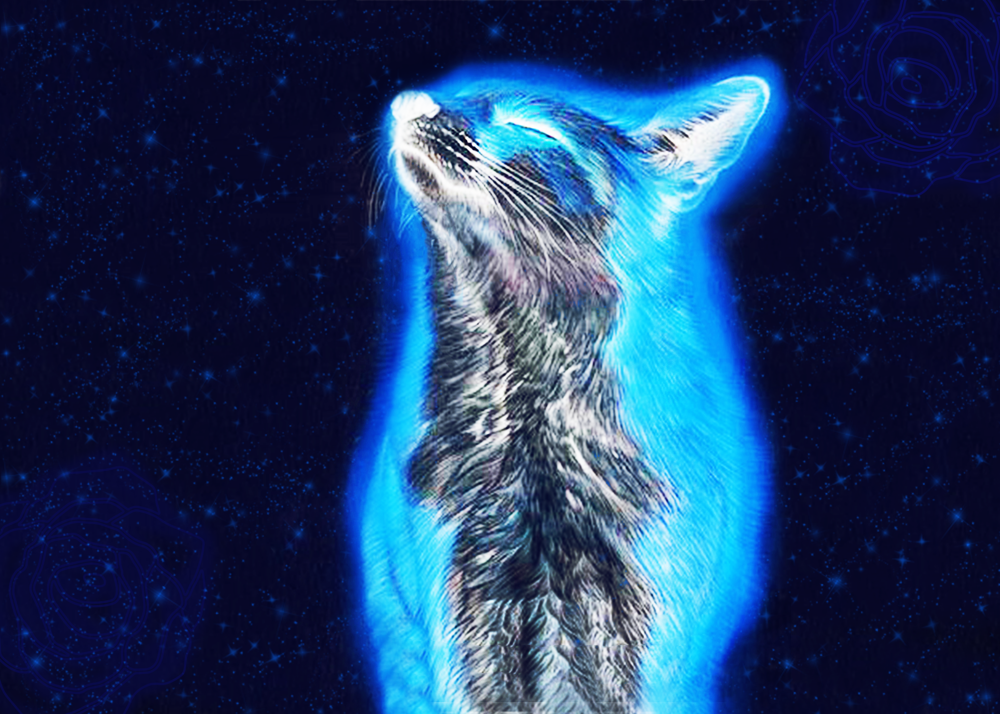
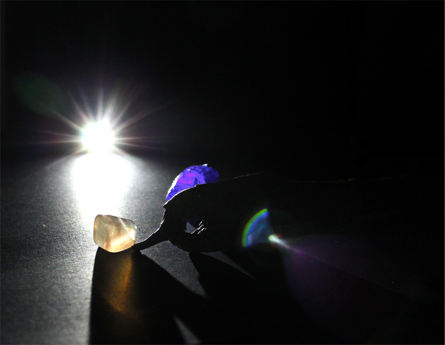

This was my first website that wasn't practice. I wanted to make a website that I could use to study for my classes.
I believe if I had more time I could make it even better, but I truly enjoy how it came out.

This website was based on the Web Design Program at my school. I took some of the photos on my phone from the actual
class, and really enjoyed designing the website and making it so interactive.
I made the holiday card by combining two tutorials I saw and changing certain aspects of them. With every tutorial I use
I try to make them my own. The holiday card was super fun to make and design.

This website was created by me and 3 other begginer coders. We met at a Hackathon in our community and created a protoype of
the website we wanted to make. It was such a nice expirence.

This project was a lot of fun to work on, I took inspiration from The Beauty and The Beast. It was a lot of fun to play with
the colors, design and glow.

This project super cool, I used a tutorial provided to me to create this. It cam out pretty sci-fi and I truly enjoyed
creating the shapes and reflections.

This was fun to make and watch come together, using a tutorial I created this bubble effect. It was really fun to make
the shading and see it come to life.

I was playing around in photoshop when I created this. Discovering the types of filters I could put on an image was really
cool. So I took the idea and ran with it.

This was a photo I took in photography class that I truly loved. It's called "A birds eye view" and I loved taking the shot
and editing it. My favorite photo I took.

I took this shot by using my phones flashlight, to make the sun rising. I thought that it looked so interesting with the light
iluminating the rocks and drift wood.